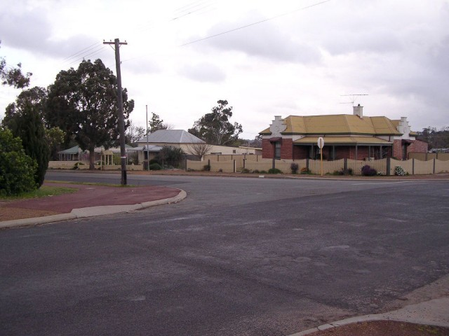
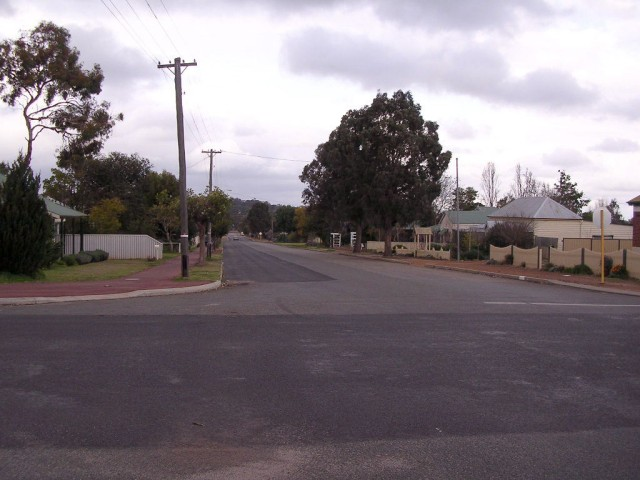
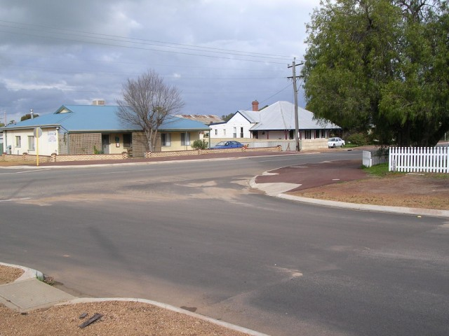
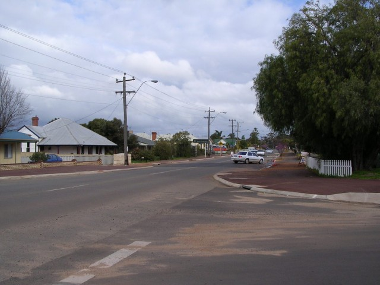

Numbers on the map represent the location where the photographs were taken. Scroll down to view the photographs.
Narrogin (Flying 50 Variant) - Glyde Street via Furnival Street to Federal Street
|| Contents || Federal / Clayton | Glyde / Furnival / Federal | Fairway || Home ||
Numbers on the map represent the location where the photographs were taken. Scroll
down to view the photographs.
Return to racingcircuits.net's Photo Archive Main Index

9 - Continuing along Glyde Street.

10 - On Glyde Street. Nowadays a right, left, right is required.

11 - Left into Furnival Street.

12 - Furnival Street.

13 - Right turn into Federal Street.

14 - Onto Federal Street.

15 - Federal Street.

16 - Left sweep on Federal Street.

17 - Left turn into Fairway Street. This section has been
realigned since the circuit was used.
Photographs and Text ©Neil Fackerell. Reproduced here with kind permission.